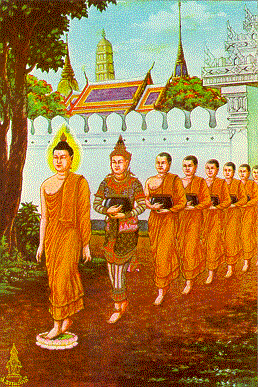
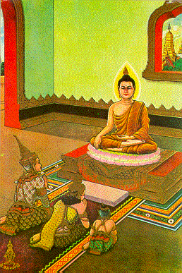

BuddhaSasana Home Page
This document is written in Vietnamese, with
Unicode Times font
| 23 | 24 |
|  |  |
| In the day Prince Nanda, his
younger brother, entering wedding ceremony, the Buddha gave his bowl to Nanda. Nanda
unwillingly carried it following the Buddha to his residence. The Buddha gave him
ordination and took him to see the fairies. Later he became an Arahat. Vào ngày Hoàng tử Nanda, em cùng cha khác mẹ, sửa soạn lễ kết hôn, Ðức Phật giao bát cho Nanda. Nanda miễn cưởng mang bát đi theo Ðức Phật về tinh xá. Sau đó, Ðức Phật truyền giới xuất gia cho Nanda, và đem chàng đi xem các cung trời. Về sau, Nanda đắc quả A-la-hán. |
King Suddhodana and Princess
Yasodhara suggested Rahula to ask to the Buddha for his heritage. The Buddha gave him
ordination as a novice. Suddhodana was very sorry. He then asked the Buddha not to give
ordination to any one who is not granted by his parents. The Buddha accepted his proposal. Vua Tịnh-phạn và Công chúa Da-du-đà-la khuyên La-hầu-la đến đòi Ðức Phật phần gia tài di sản. Ðức Phật cho phép cậu xuất gia Sa-di. Vua Tịnh-phạn rất buồn phiền về việc này. Sau đó, nhà vua đề nghị Ðức Phật không làm lể xuất gia cho những ai chưa có sự đồng ý của cha mẹ. Ðức Phật chấp nhận đề nghị đó. |
[Mục Lục][01-02][03-04][05-06][07-08][09-10][11-12][13-14]
[15-16][17-18][19-20][21-22][23-24][25-26][27-28][29-30][31-32]
Source: Post Cards from S. Dhumphakdi & Sons Publisher, Bangkok, Thailand